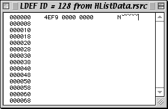

|
|
This Technical Note describes how to move existing applications to Mac OS X and where equivalent functionality found in existing applications and other software can be implemented in Mac OS X.
Included in this discussion is a section describing techniques developers can employ in their source base to allow them to compile their applications for both pre-Carbon and Carbon execution environments. This is a useful strategy for developers who must both keep their products up to date with current technology and continue to support customers with legacy equipment.
A quick lookup table is provided at the end of this document that allows for quick access to information related to various technologies.
This Technical Note is directed at application developers who have existing software designed for use with System 7, Mac OS 8, or Mac OS 9 that must also work with Mac OS X.
Updated: [Oct 5 2000]
|
Overview
This section provides a general overview of important high-
level concepts that must be considered when moving your applications
to Mac OS X.
Carbon
It will be possible for existing applications to run in Mac OS X
inside of the Classic environment. But, these applications will
not be able to take full advantage of the features provided by Mac OS X
until they have been re-compiled as Carbon applications.
Carbon is Apple's new API set for Mac OS applications and it is a
subset of selected APIs that were previously offered in
Mac OS 9 together with a rich new set of APIs.
For more information about the Carbon APIs, please refer to the
online Carbon documentation at the address:
http://developer.apple.com/carbon/.
Back to top
CFM & Mach-O
Mac OS X supports two runtime models, CFM and Mach-O. Because neither
Mac OS 8 nor Mac OS 9
supports the Mach-O runtime model, a single binary application capable
of running on both Mac OS X and Mac OS 8/9 must be compiled as a CFM application.
Conversely, applications needing direct access to mach kernel, or BSD services, will
either have to build as Mach-O binaries or adopt a CFBundle strategy to call the
underlying Mach-O compiled routines.
For more information about the Mac OS X runtime model, please refer to the
Mac OS X System Overview
book.
Back to top
Mac OS 9 Packages & Mac OS X Bundles
In Mac OS X, both the Mac OS 9 package format and
the new Mac OS X bundle format are used to provide the
folder-as-object user interface in the Desktop application. Using this
packaging method, a folder containing a number of file system objects
behaves as if it were a single file in the Desktop application's windows.
Documentation for the new Mac OS X bundle format can be found in the
Mac OS X system overview. This document can be obtained at the
address:
http://developer.apple.com/documentation/macosx/macosx.html
The Mac OS 9 package format is described in Technical Note 1188,
"Packages in Mac OS 9" located at the address
http://developer.apple.com/technotes/tn/tn1188.html,
and the Mac OS X bundle format is described in the Mac OS X
System Overview book.
As both the Mac OS 9 package model and the Mac OS X bundle format
use folders, it is possible to format a folder that is both a Mac OS 9
package and a Mac OS X bundle. Such a folder should adhere to the
Mac OS X bundle specification, but Mac OS 9 files should be located
in a sub directory with the ":Contents:MacOSClassic:" sub-folder.
Back to top
Preemption & Multitasking
The older "polling for events" model imposed by WaitNextEvent is
no longer necessary under Mac OS X. Carbon and Cocoa applications
running in Mac OS X can use the new Carbon Event model that will
allow or more efficient use of processor time. With Carbon Events,
the event model has changed: instead of your application polling
for events to discover changing conditions it must respond to, your
application is called upon as events you wish to respond to arise.
As well, Carbon provides a suite of Multiprocessing APIs you can
use for creating your own symmetrically scheduled preemptive tasks
(At the time of this writing, not all of the Carbon APIs can be
called from preemptive tasks. See the Multiprocessing API documentation
for more information).
Documentation for Carbon Events can be found in the Carbon SDK,
and documentation for Apple's Multiprocessing APIs can be found
in the Multiprocessing SDK.
Back to top
File Organization
Mac OS X and Carbon are designed to operate on single-forked files
with filename extensions, as well as traditional Mac OS dual-forked files
containing a type and creator.
Back to top
Sharing Code
The Code Fragment Manager is fully implemented in Mac OS X's Carbon
APIs. As well, Mac OS X implements a new method for sharing code called
frameworks. Frameworks are libraries packaged in Mac OS X bundles. Frameworks
are essentially shared libraries packaged along with the headers that are related
to the software in that shared code.
Frameworks are described in the Mac OS X System Overview book.
Back to top
Background-only Applications
Background-only applications are fully supported. Furthermore, in many cases,
it may be desirable to implement background-only applications as Mach-O
executables for better access to system resources (so they function as
daemon processes).
Back to top
Shared Memory
Using shared memory areas for communications between applications
will is possible for applications running in the Mac OS X
environment; however, as Mac OS X uses separate protected memory
partitions for each application, additional work is required to implement
sharing memory between applications.
NOTE: Carbon applications also have access to the Core Foundation
notification facilities for sending small-event type notifications
between processes. Additionally, Carbon applications compiled as Mac OS X
Mach-O binaries have access to the BSD APIs for sharing memory.
Back to top
Process to Process Communications
The PPC ToolBox is not available to Carbon applications. Here,
equivalent functionality is provided by the Apple Event Manager.
Any code that uses the PPC ToolBox should be changed so it uses the
Apple Event Manager instead.
NOTE: Carbon applications also have access to the Core Foundation
notification facilities for sending small event type notifications
between processes. And, Carbon applications compiled as Mac OS X
Mach-O binaries have access to the Mach-O style messaging.
Back to top
User Experience
The Macintosh has always been known as being easier, friendlier, and more
consistent to use and Mac OS X takes this standard to a whole new level with
a refined and enhanced user interface - Aqua. Users, and reviewers, will
expect your application to take full advantage of Aqua and one of the best
ways to accomplish this is for you to adhere to the new Aqua Human Interface
Guidelines.
Aqua User Interface
If your application has been compiled as a Carbon application and it uses
standard system controls and Appearance Manager routines for drawing its
user interface, then your application will be able to display the Aqua user
interface when running on Mac OS X.
As you move your application to Mac OS X, take the time to refresh your
product's interface. Doing so will allow you to deliver an awesome user
experience which will help differentiate your product and make you stand out
from the crowd.
For more information about adopting Aqua in your applications, please refer
to the Adopting Aqua documentation that can be found at the address:
http://developer.apple.com/documentation/macosx/.
Back to top
Apple Help
Delivering your help content to users in a consistent and compelling manner
is a key part of a well designed user experience within your product. The
best way to achieve this is by using Apple Help, the HTML-based Help system
for Mac OS X applications.
AppleGuide and Balloon Help are no longer supported and Apple Help is the
only help solution for Mac OS X. Apple Help is based on HTML 3.2, allowing
you to author you content using popular 3rd party web authoring products,
and also builds on many of Apple's core technologies like QuickTime,
AppleScript, URL Access, Internet Config, VTwin, HTML Rendering Library and
Carbon.
For more information about using Apple Help, refer to
the Apple Help Documentation Page,
the Apple Help Technical Q&As,
and the
Apple Help Technology Page.
Back to top
Custom Code Resources
Custom code resources are no longer used by Carbon applications.
In their place, your application must use new APIs for creating custom
controls, custom windows, custom menus, and custom lists. These new
APIs are discussed below.
Custom Controls (CDEFs)
Custom control definition procedures are no longer compiled into
separate stand-alone code resources. Under Carbon, the control definition
procedure should be compiled into your application and you should
use the CreateCustomControl routine to create controls
that use the custom definition procedure.
Normally, since the control definition routine you pass to
CreateCustomControl uses the same calling conventions
as the older as the CDEF routine, moving your code to Carbon will
simply involve re-compiling the code resource into your application
and switching to using the CreateCustomControl routine
when creating controls that use the custom drawing method.
Developers interested in maintaining a cross-compilable Carbon/pre-Carbon
source base can use the method outlined below in the
Backwards Compilable Coding for xDEFs
section.
Back to top
Custom List Definitions (LDEFs)
Custom list definitions now use the CreateCustomList API.
In many cases, though, it may be desirable to use the new Data Browser
control in places where the list manager was used in the past. The
Data Browser control is available to Carbon applications in both
Mac OS 9 and Mac OS X.
Back to top
Custom Menus (MDEFs)
Custom menus now use the CreateCustomMenu API.
Back to top
Custom Windows (WDEFs)
Custom windows now use the CreateCustomWindow API. It is no longer
necessary to store window definition procedures in separate
code resources. Listings 1 and 2
illustrate how to implement a window definition routine and how
to create a window that uses it.
static pascal long SimpleFrameDef(short varCode, WindowRef window,
short message, long param)
{
#pragma unused( varCode )
switch ( message )
{
case kWindowMsgGetFeatures:
*(OptionBits*) param = kWindowCanGetWindowRegion
| kWindowDefSupportsColorGrafPort;
return 1;
case kWindowMsgGetRegion:
{
GetWindowRegionRec* rgnRec = (GetWindowRegionRec*) param;
if ( rgnRec->regionCode == kWindowContentRgn
|| rgnRec->regionCode == kWindowStructureRgn )
{
Rect portBounds;
GetWindowBounds( window, kWindowGlobalPortRgn,
&portBounds );
RectRgn( rgnRec->winRgn, &portBounds );
if ( rgnRec->regionCode == kWindowStructureRgn )
InsetRgn( rgnRec->winRgn, -1, -1 );
}
return noErr;
}
case kWindowMsgDraw:
{
Rect portBounds;
GetWindowBounds( window, kWindowGlobalPortRgn, &portBounds );
InsetRect( &portBounds, -1, -1 );
FrameRect( &portBounds );
break;
}
case kWindowMsgHitTest:
return wInContent;
default:
break;
}
return 0;
}
|
|
Listing 1. Code listing for a window definition routine.
|
Using the window definition routine shown in Listing 1, you can
create a new window that uses the definition by calling the
CreateCustomWindow routine. An example illustrating
how this can be done is shown in Listing 2.
WindowDefSpec defSpec;
WindowRef floater;
defSpec.defType = kWindowDefProcPtr;
defSpec.u.defProc = NewWindowDefUPP( SimpleFrameDef );
SetRect( &bounds, 10, 60, 200, 200 );
CreateCustomWindow( &defSpec, kFloatingWindowClass,
kWindowStandardFloatingAttributes,
&bounds, &floater );
ShowWindow( floater );
|
|
Listing 2. Code listing illustrating how to create a window
that uses the window definition procedure defined in Listing 1.
|
Back to top
System Extensions & Control Panels
System Extensions & Control Panels should be implemented as
applications in Mac OS X. In Mac OS 9, they should be implemented
as APPE- and APPC-type applications. The following provides an overview
of some facilities commonly used by System Extensions & Control Panels
and their status in Mac OS X.
ADB Patching
The ADB Manager is not supported in Mac OS X.
Back to top
Contextual Menu Modules
Contextual Menu Modules (CMM) are supported in Mac OS X; however,
the older SOM object format is not used. For the system to load
your CMM, it must be saved as a CFM plug-in in the Contextual Menu Items
subfolder. (The exact location of this folder can be determined by calling
FindFolder with the kContextualMenuItemsFolderType
selector.)
Back to top
Drivers use I/O Kit
The older Mac OS device driver APIs documented in Inside Macintosh:Devices
and Drivers is no longer supported. Developers interested in creating
drivers for use in Mac OS X must use the new device driver APIs.
Currently these APIs are available as a part of the Mac OS X
developer tools installation (relevant headers can be found in the IOKit and Kernel
frameworks).
For information about Mac OS X driver development, consult the
I/O Kit documentation either on the Mac OS X installation at
/Developer/Documentation/Kernel or the Mac OS X Developer Documentation Web site
http://developer.apple.com/documentation/macosx/.
Also, the I/O Kit source code is available for download from Apple's Darwin public source Web site
http://www.publicsource.apple.com. The projects
containing I/O Kit are xnu (containing the kernel) and IOKitUser (containing IOKitLib).
Back to top
jGNEFilter
The jGNEFilter is not supported in Mac OS X.
Back to top
Patching Traps
Mac OS X does not contain a trap table.
Back to top
Special Issues
Other special issues to consider when moving your product
to Mac OS X are discussed in this section.
Backwards-Compilable Coding for Applications
It is possible to maintain a backwards-compatible code
base that can be compiled for either Carbon or pre-Carbon
environments. This section is intended for developers who
would like to support customers using pre-Carbon systems
while at the same time keeping their source base up to
date with the latest Carbon headers.
To compile for pre-Carbon execution, use
the following steps:
- Make sure you are using Universal Interfaces 3.3.2 or later.
The most recent version of the Universal Interfaces can be
found at the address http://developer.apple.com/sdk/index.html.
- Set the compile time symbols
OPAQUE_TOOLBOX_STRUCTS and
to ACCESSOR_CALLS_ARE_FUNCTIONS to equal one (1).
- Link with CarbonAccessors.o and whatever other libraries you require.
- Use the compile time variable
TARGET_API_MAC_CARBON to control
compilation of Carbon specific parts of your program.
|
IMPORTANT
While CarbonAccessors.o will allow you to maintain a source
base for your product that can be compiled as either a CarbonLib application
or as an InterfaceLib application, it does not allow InterfaceLib
applications to use any of the routines that are only available in CarbonLib.
If you have any problems using CarbonAccessors.o, please bring them to our
attention using Apple's bug reporting web page at
http://developer.apple.com/bugreporter/index.html.
|
And then to compile your application as a Carbon application, use the following
steps:
- Make sure you are using Universal Interfaces 3.3.2 or later.
- Set the compile time symbol
TARGET_API_MAC_CARBON
equal one (1).
- Link with CarbonLib and whatever other libraries you require.
- Use the compile time variable
TARGET_API_MAC_CARBON to control
compilation of Carbon specific parts of your program.
- Include a 'carb' ID=0 resource in the application's resource fork.
In most cases, the minimal requirements for creating a Carbon and pre-Carbon
compilable source base for your application will involve adding the
conditional statements shown in listing 3 to your program's main
routine.
#if ! TARGET_API_MAC_CARBON
#ifndef __MWERKS__
QDGlobals qd; /* QuickDraw globals */
#endif
#endif
int main(void) {
#if ! TARGET_API_MAC_CARBON
SetApplLimit(GetApplLimit());
MaxApplZone();
InitGraf(&qd.thePort);
InitFonts();
InitWindows();
TEInit();
InitMenus();
InitDialogs(0);
#endif
InitCursor();
. . .
|
|
Listing 3. Code listing illustrating some of the necessary
pre-processor time for creating a Carbon/pre-Carbon cross-compilable
application.
|
In the majority of cases, once an application has been Carbonized and
the above compile time structures have been included in the application,
it will be possible to compile the application as a pre-Carbon application
for System 7 through System 8, a CFM Carbon application for
System 8.1, Mac OS 9.x and Mac OS X, and as a
Mach-O Carbon application for Mac OS X. Be aware, though,
APIs provided in the Carbon interfaces will only be available if they
are implemented in the environment where the application is running.
The code shown in listing 3 represents the minimum compiler exclusions
for cross compilable Carbon/pre-Carbon code. Depending on what parts
of the operating system your application uses there may be additional
places where additional compilation exclusions must be placed in your
source files. The most obvious places are as follows:
- The initialization statements, as shown in listing 3.
- Calls to
SystemClick.
- Calls related to managing the Apple menu such
as
OpenDeskAcc and AddResMenu (In Carbon
applications, the Apple menu is managed for you).
- Places where you use custom code resources such as CDEFs, LDEFs,
WDEFs, et cetera. A technique for maintaining cross-Carbon compilable
code is presented in the Backwards-Compilable
Coding for xDEFs section in the Custom Code
Resources section.
Back to top
Backwards-Compilable Coding for xDEFs
It is possible to maintain a backwards-compatible code
base that creates and uses custom definition procedures. This section
provides a LDEF sample illustrating how to do this.
For Carbon applications, definition routines are stored
in the application's executable. They are not stored as separate code
resources as they were in previous system versions. In this example,
the definition routine is stored in the application's code for both
the pre-Carbon build and the Carbon build. In the pre-Carbon build,
instead of storing the code for the definition routine in the code resource,
the code resource contains a single jump instruction that jumps to the
routine stored in the application. Listing 4 shows a C declaration that
illustrates the format of the jump instruction saved in the code resource
and Figure 1 illustrates how this resource should appear in a ResEdit
window.
#if ! TARGET_API_MAC_CARBON
#define kPatchResID 128
#define kPatchResTYPE 'LDEF'
#pragma options align=mac68k
typedef struct {
short jmpabs; /* 4EF9 */
ListDefUPP theUPP; /* 00000000 */
} **PatchResource;
#pragma options align=reset
#endif
|
| Listing 4. Type definition used
for accessing the LDEF resource. |
When your application is compiled as a Carbon application,
this resource will be ignored. And, as the space it occupies is negligible,
there is no harm in leaving it in your resource fork.

Figure 1. The contents of the LDEF resource
as displayed in a ResEdit window.
Inside of your application, provide the code for the
definition routine itself. In most cases, prototypes for these routines
have not changed in Carbon so no special compile time switches are required
in the definition procedure itself.
Listing 5 illustrates how one would go about using a
custom list definition compiled using this method. In Mac OS 9,
the code resource is set up to point to the definition procedure defined
inside of the application and the list is created using the older LNew
routine. When the application is compiled as a Carbon application, it
does not use the LDEF resource. Instead, it provides a
reference to the list definition procedure in a call to CreateCustomList.
/* the list definition procedure */
static pascal void HListDataLDEF(short lMessage,
Boolean lSelect, Rect* lRect, Cell lCell, short lDataOffset,
short lDataLen, ListHandle lHandle) {
. . .
}
. . .
ListHandle theList; /* storage for the list */
. . .
#if TARGET_API_MAC_CARBON
/* Carbon applications use the CreateCustomList API */
ListDefSpec theSpec;
theSpec.defType = kListDefUserProcType;
theSpec.u.userProc = NewListDefProc(HListDataLDEF);
CreateCustomList(bounds, &dataBounds, cSize, &theSpec,
theWindow, true, hasGrow, false, true, &theList);
#else
/* pre-Carbon applications set the address in the LDEF
to a routine descriptor referring to their list
definition routine. */
PatchResource gLDEFrsrc;
gLDEFrsrc = (PatchResource) GetResource(kPatchResTYPE, kPatchResID);
(**gLDEFrsrc).theUPP = NewListDefProc(HListDataLDEF);
theList = LNew(bounds, &dataBounds, cSize, kPatchResID,
theWindow, true, hasGrow, false, true);
#endif
|
| Listing 5. Creating a list that
uses a custom list definition routine. |
Back to top
Double-Buffered Windows
The screen in Mac OS X is double-buffered for
you. For normal drawing and responding to update events, you will not
have to do any special drawing. However, in some circumstances it may
be necessary for you to ask the system explicitly to draw the contents
of your window to the display. Listing 6 illustrates how this can be
done.
CGrafPtr thePort;
WindowPtr theWindow;
thePort = GetWindowPort(theWindow);
/* flush the entire port */
if (QDIsPortBuffered(thePort))
QDFlushPortBuffer(thePort, NULL);
/* flush part of the port */
if (QDIsPortBuffered(thePort)) {
RgnHandle theRgn;
theRgn = NewRgn();
/* local port coordinates */
SetRectRgn(theRgn, 10, 10, 100, 30);
QDFlushPortBuffer(thePort, theRgn);
DisposeRgn(theRgn);
}
|
| Listing 6. Flushing a window's grafport's
contents to the screen. |
|
IMPORTANT
Items that are drawn in a Carbon window will only be auto-flushed to
the screen if the application directly or indirectly calls the event
loop (RunApplicationEventLoop, WaitNextEvent, GetNextEvent,
TrackMouseLocation, et al.).
If your application is trying to update a window without calling
the event loop (for example, drawing items in a splash window during program
startup), then it is
your application's responsibility to make sure items drawn in
the window are flushed to the screen (by calling QDFlushPortBuffer).
|
Back to top
Special Folders and File Permissions
The FindFolder routine is fully supported
under Mac OS X and it should be used to locate special folders
designated by the system. As there may be dramatic differences between
the locations of some of these folders in Mac OS X relative
to their location in previous system releases, the volume and directory
information returned by FindFolder is now the only supported
way to discover a special folder's location.
Developers should be aware that different users may have
different file access permission for files located in these special
directories. For information about how to ensure your application will
be able to operate under these conditions, please refer to the Multiple
Users Info Kit located at the address:
ftp://ftp.apple.com/developer/Technical_Documentation/MultipleUsers_Info_Kit_R3/.
Back to top
Common Coding Changes
This section discusses the common changes that must be
made in an application when moving it to Carbon.
Opaque Structures
Most toolbox structures are now opaque. This means it
is no longer possible to access them directly and they can only be accessed
by way of accessor routines.
Back to top
Code Resources
Custom Code Resources such as CDEFs, WDEFs, and LDEFs
are no longer used. There are new mechanisms in place that allow you
to implement these features. Ways of using these mechanisms are described
in the Custom Code Resources section.
Back to top
QuickDraw Globals
QuickDraw global variables are no longer accessed using
structure references. Instead, when you access these globals you must
use accessor routines.
long GetQDGlobalsRandomSeed(void);
BitMap * GetQDGlobalsScreenBits(BitMap *screenBits);
Cursor *GetQDGlobalsArrow(Cursor *arrow);
Pattern *GetQDGlobalsDarkGray(Pattern *dkGray);
Pattern *GetQDGlobalsLightGray(Pattern *ltGray);
Pattern *GetQDGlobalsGray(Pattern *gray);
Pattern *GetQDGlobalsBlack(Pattern *black);
Pattern *GetQDGlobalsWhite(Pattern *white);
CGrafPtr GetQDGlobalsThePort(void);
void SetQDGlobalsRandomSeed(long randomSeed);
void SetQDGlobalsArrow(const Cursor *arrow);
|
| Listing 8. New QuickDraw globals
accessor routines. |
Back to top
The Scrap Manager
The Scrap Manager APIs have been expanded to provide
enhanced functionality. One of the most interesting features of the
new Scrap Manager is the ability for an application to specify promised
flavors that it does not need to provide until a client application
requests the data for the promised scrap flavor. Obviously, this allows
applications to offer a richer selection of scrap types without incurring
additional processing requirements.
Back to top
Quick Lookup Table
The table provided in this section map provides information
about where to look for pre-existing Mac OS APIs or the functionality
provided by those APIs in Mac OS X. Items marked as supported are provided
as Carbon APIs unless marked otherwise.
|
Mac OS 7/8/9 technology
|
Where to find similar functionality in Mac OS X
|
|
Alias Manager
|
The Alias Manager is supported under Carbon. See the Alias Manager
Carbon Specification
for details.
|
|
Appearance Manager
|
Continue using the Appearance Manager in Carbon. When doing so you'll get the new Aqua look for free. See the Appearance Manager
Carbon Specification
for details.
|
|
Apple Event Manager
|
Fully supported. Can be used to send Apple events between Classic, Cocoa, and Carbon. Can no longer be used for sending events to remote machines. See the Apple Event Manager
Carbon Specification
for details.
|
|
Apple Filing Protocol (AFP)
|
Developers using the
PBControl
or
NAFPCommand
calls to send AFP packets to an AppleShare Server who wish to access these services in Mac OS X will have to revise their products to use the new AFP APIs provided by the
AppleShareClientCore
framework. This framework is available for both Carbon and Cocoa applications compiled as Mach-O binaries. The AFP Datastream APIs defined in
AppleShareClientCore/afpDataStream.h
provide the same functionality as the older APIs.
|
|
Apple Game Sprockets
|
Look for equivalent functionality in other managers. See the Apple Game Sprockets
Carbon Specification
for details.
|
|
Apple Guide
|
Not supported. Developers should move their help facilities to Help Viewer Help Books.
|
|
Apple Help Viewer
|
The Apple Help Viewer is still supported.
|
|
Apple Shared Library Manager
|
Not supported.
|
|
Apple Type Services for Unicode
|
Supported. See the ATSUI
Carbon Specification
for details.
|
|
AppleScript
|
Fully supported. See the Open Scripting Architecture
Carbon Specification
for details.
|
|
AppleShare
|
Use the new AFP APIs provided by the
AppleShareClientCore
framework.
|
|
Code Fragment Manager
|
Supported. See the Code Fragment Manager
Carbon Specification
for details.
|
|
Collection Manager
|
The Collection Manager is supported under Carbon. See the Component Manager
Carbon Specification
for details.
|
|
ColorSync Manager
|
Fully supported.
|
|
Communications Toolbox
|
Not supported.
|
|
Component Manager
|
Fully supported. See the Component Manager
Carbon Specification
for details.
|
|
Contextual Menu Manager
|
Supported. SOM CMMs are no longer supported.
|
|
Control Manager
|
Supported.
|
|
Control Panels
|
Not supported. Use applications instead.
|
|
Control Strip
|
Put them in the dock.
|
|
Cursor Utilities
|
Cursor utilities are fully supported in Mac OS X. In addition, it is no longer necessary for developers to display their own custom animated tasks while an application is waiting for a lengthy operation to complete. Mac OS X will automatically display the animated spinning rainbow disk cursor whenever the frontmost task is blocked.
|
|
Date, Time, and Measurement Utilities
|
Fully supported.
|
|
Dialog Manager
|
Supported. Some routines have been removed. See the Dialog Manager
Carbon Specification
for details.
|
|
Disk Initialization Manager
|
Not supported. Now done using the Desktop (a.k.a., Finder).
|
|
Display Manager
|
Supported. See the Display Manager
Carbon Specification
for details.
|
|
Drag Manager
|
Supported. See the Drag Manager
Carbon Specification
for details.
|
|
Edition Manager
|
Not supported.
|
|
Event Manager
|
Supported.
A new event model has been introduced called "Carbon Events." Some documentation can be found on the CarbonLib SDK.
|
|
Exception Manager
|
Not supported.
|
|
File Manager
|
The File Manager is supported under Carbon; however, some parts of the File Manager's API have been removed. Specifically, the concept of "Working Directory" is no longer supported under Carbon. Instead of using working directories, applications should always refer to file system entities and should use explicit name, volume, and directory IDs.
It is suggested that developers begin using the new HFS Plus API's for accessing the file system. See the
File Manager documentation
for more information about the new HFS Plus API's.
|
|
File System Manager
|
The File System Manager is no longer supported under Carbon or Mac OS X. For this functionality in Mac OS X, you must implement Virtual File System (VFS) plugin Mach-O extension.
|
|
Find By Content / Sherlock
|
Supported.
|
|
Finder Interface
|
In Mac OS X, the application that provides user interaction with the file system is called the Desktop. This application replaces the functionality of the Finder application shipping with previous system releases.
Traditional Finder resources and information are recognized by the Desktop application. Moreover, the Desktop recognizes Mac OS 9 packages.
Mac OS X includes a richer application bundling scheme that is documented in the Mac OS X System Overview book.
|
|
Folder Manager
|
Locations for special folders maintained by the system may be dramatically different when your application is running in Mac OS X; hence, it is essential that your application rely on both the volume reference number and directory ID returned by
FindFolder
when identifying the locations of these special folders.
It is also important that your application recognize the fact that access permissions for files located in these folders may vary from user to user. For more information and references to further documentation, please refer to the
Special Folders and File Permissions
section of this technical note.
|
|
Font Manager
|
Supported.
|
|
FontSync
|
Supported.
|
|
Gestalt Manager
|
Supported.
|
|
Help Manager
|
Balloon Manager has been replaced with help tags. Carbon applications will use this new Apple Help API, defined in MacHelp.h. See the Apple Help
Carbon Specification
for details.
|
|
HTML Rendering Library
|
Fully supported under Carbon. See the HTML Rendering Library
Carbon Specification
for details.
|
|
Icon Services and Utilities
|
Supported.
|
|
Imaging (ATSUI)
|
Supported.
|
|
Installer
|
Not supported. There is a new installer mechanism for Mac OS X.
|
|
Interfaces & Libraries
|
3.3.2.
|
|
List Manager
|
Supported. New data browser control is now available, making it easier to display lists with a consistent "look."
|
|
Locales
|
Supported.
|
|
Location Manager
|
Not supported.
|
|
Low Memory Accessors
|
Accessor functions are now the only way to access low-memory globals. Attempting to access low-memory globals in some other way may result in an addressing error.
Many of these have been dropped. See the Low-Memory Accessors
Carbon Specification
for details.
|
|
Mac OS USB
|
Supported.
|
|
MacApp
|
Being ported.
|
|
Macintosh Programmer's Workshop (MPW)
|
Can be used in the Classic environment.
|
|
MacsBug
|
Can be used in the Classic environment.
|
|
Mathematical and Logical Utilities
|
MathLib's functionality is exported from CarbonLib.
|
|
Memory Manager
|
Supported. Some changes in how memory is handled. Most notably application's heap space can grow dynamically and is no longer fixed. (Carbon and Cocoa apps only.) See the Memory Manager
Carbon Specification
for details.
|
|
Menu Manager
|
Supported.
|
|
Mixed Mode Manager
|
Not supported.
|
|
MRJ
|
Supported. Should be Java 1.2 or later.
|
|
Multilingual Text Editor
|
Supported.
|
|
Multiprocessing Services
|
Supported.
|
|
Multiple Users
|
APIs associated with Multiple Users are not supported. However, the concept of user levels and login levels are supported.
|
|
Navigation Services
|
Supported.
|
|
Network Services Location (NSL) Manager
|
Supported.
|
|
Notification Manager
|
Supported. See the Notification Manager
Carbon Specification
for details.
|
|
Offscreen Graphics Worlds
|
Supported. See the QuickDraw Manager
Carbon Specification
for details.
|
|
Open Transport
|
Supported. Some APIs have been removed. See the Open Transport
Carbon Specification
for details.
|
|
Open GL
|
Supported.
|
|
Package Manager
|
Not supported.
|
|
Palette Manager
|
Supported. See the Palette Manager
Carbon Specification
for details.
|
|
PCI Driver Development Kit
|
See IOKit.
|
|
Picture Utilities
|
Supported.
|
|
PPC Toolbox
|
The PPC Toolbox is not implemented in Carbon. Instead, you should use the Apple Event Manager for sending information between processes.
|
|
Printing Manager
|
New API for the printing manager. Current docs are on the Carbon SDK. See the Printing Manager
Carbon Specification
for details.
|
|
Process Manager
|
Supported.
|
|
Queue Utilities
|
Supported.
|
|
QuickDraw
|
Supported. Cannot used Quartz from CFM applications, but you can if you recompile them as Mach-O binaries.
|
|
QuickDraw 3D
|
Not supported.
|
|
QuickDraw Text
|
Supported.
|
|
QuickTime
|
The QuickTime APIs are provided in CarbonLib.
|
|
ResEdit
|
Works in Classic. Can crash with certain operations.
|
|
Resource Manager
|
Supported. See the Resource Manager
Carbon Specification
for details.
|
|
Scrap Manager
|
Supported, but with new APIs. Documented in the Carbon SDK.
|
|
Script Manager
|
Supported.
|
|
Shutdown Manager
|
Not supported. Applications requiring this functionality should use the
kAEQuitApplication
event instead.
|
|
Sound Manager
|
Supported.
|
|
Speech Recognition Manager
|
Supported.
|
|
Speech Synthesis Manager
|
Supported.
|
|
Start Manager
|
Not supported. There are no extensions, so extension loading order is not important.
|
|
Telephone Manager
|
Not supported.
|
|
Text Encoding Conversion Manager
|
Supported.
|
|
Text Services Manager
|
Supported.
|
|
Text Utilities
|
Supported.
|
|
TextEdit
|
Supported.
|
|
Thread Manager
|
Supported.
|
|
Time Manager
|
Supported.
|
|
Translation Manager
|
Supported.
|
|
Trap Manager
|
Not supported.
|
|
Unicode Utilities
|
Supported.
|
|
URL Access Manager
|
Supported.
|
|
Vertical Retrace Manager
|
Not supported. Use the Time Manager instead.
|
|
Virtual Memory Manager
|
Not supported.
|
|
Window Manager
|
Supported.
|
Back to top
Downloadables
|

| Acrobat version of this Note (200K) |
Download
|
Back to top
|